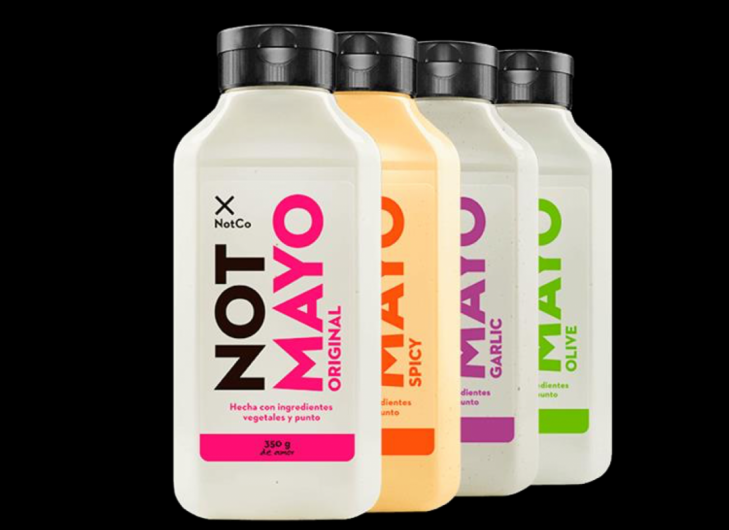

Inteligencia artificial en la industria de alimentos
La inteligencia artificial es de gran utilidad para la sociedad y hoy está revolucionando la manera de fabricar, transportar y consumir alimentos. Esta tecnología ofrece importantes beneficios al sector a nivel estratégico y operativo a través de la toma de decisiones más ágil, una producción flexible y eficiente, una mejor adaptación al entorno y cadenas de valor más colaborativas.
Las empresas del sector alimentario podrían encontrar en la inteligencia artificial un excelente aliado que les permitirán ofrecer experiencias de compra que superan las expectativas de sus consumidores, al mismo tiempo recopilar datos para su análisis y la posterior implementación de estrategias que se adapten efectivamente al entorno.
En la actualidad, las empresas poseen un gran volumen de datos estructurados y no estructurados. Estos datos se recopilan de correos electrónicos, manuales, documentos, publicaciones en redes sociales, videos, imágenes, grabaciones de audio, comentarios de clientes, informes de la industria y más. Esta combinación de poder informático y grandes cantidades de datos son la base para determinar patrones de los sistemas inteligentes.
formas en que la IA puede transformar las empresas de alimentos y bebidas
Los algoritmos basados en la inteligencia artificial aprenden de varios factores, como las promociones de productos, las redes sociales, la demanda de los consumidores, las tendencias del mercado e incluso el clima y utilizando estos datos históricos puede predecir el ciclo de ventas de cada producto durante un período de tiempo determinado. Asimismo, con los resultados suministrados, se puede identificar los principales clientes por la frecuencia de sus compras y también la demanda específica de cada producto, información que ayuda a realizar pronósticos más precisos con lo cual las empresas pueden gestionar de manera eficiente sus inventarios y con ello mejorar la cadena de suministro.
La inteligencia artificial puede realizar un seguimiento de los clientes, teniendo en cuenta sus gustos y preferencias. Uno de los mecanismos utilizado es el estudio de las emociones asociadas hacia los productos de acuerdo con las interacciones en las redes sociales y otros medios. La IA utiliza esta información de los clientes para categorizarlos en respuestas positivas, negativas o neutrales y posteriormente generar campañas de marketing más efectivas y diseñar productos que respondan a las necesidades del consumidor.
La clasificación de los productos agrícolas, según los estándares de calidad, es uno de los procesos que más tiempo consume para cualquier empresa. Con la inteligencia artificial, la clasificación se puede hacer más fácil al automatizar este proceso mediante el uso de una técnica de clasificación óptica basada en sensores que realizan aprendizaje automático. Como resultado, las empresas dedican menos horas a la clasificación y reducen los desperdicios. Esta técnica se ha utilizado en productos como papas donde se realiza una clasificación por tamaño y en tomate donde la clasificación por color disminuye los rechazos por parte de los minoristas.
Alimentos creados con IA
estableció una importante alianza con IBM para utilizar la inteligencia artificial para apoyar en el desarrollo de nuevos sabores deliciosos e innovadores. La empresa de alimentos utilizó sistema de inteligencia artificial en el desarrollo de tres nuevas mezclas de condimentos que pronto estarán en los anaqueles: Tuscan Chicken,Bourbon Pork Tenderloin y New Orleans Sausage.
estableció una importante alianza con IBM para utilizar la inteligencia artificial para apoyar en el desarrollo de nuevos sabores deliciosos e innovadores. La empresa de alimentos utilizó sistema de inteligencia artificial en el desarrollo de tres nuevas mezclas de condimentos que pronto estarán en los anaqueles: Tuscan Chicken,Bourbon Pork Tenderloin y New Orleans Sausage.
es una plataforma impulsada por inteligencia artificial que da soporte y respalda la investigación y desarrollo inteligente para la producción eficiente, mediante datos, de alimentos derivados de plantas. El equipo desarrolla y rastrea una línea prototipo de datos de entrenamiento comestibles en forma de refrigerios de frutas.